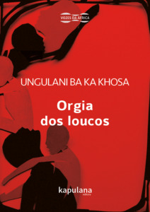

A obra que foi publicada na década de 90, composta por 9 contos, relata significamente como a população procedeu aos anos da independência de Moçambique. Inicialmente se parecem tratar de contos desconexos, os quais apenas mostram uma realidade cruel em comum, a fome, a sede, a falta de esperança e a economia totalmente quebrada são somente alguns aspectos em comum. Porém, ao levar em conta o tempo em que foi escrito os contos, todos se tratam sobre o período sangrento da revolução, o qual inclusive, no quinto conto "A orgia dos loucos" fica mais claro essa questão, tanto pelo conto quanto pelo seu titulo, o qual se origina o nome do livro.
Apesar de ser cliche que povos caracterizados pelas dificuldades sociais e economicas normalmente retratarem essas questões na sua arte, Ungulani consegue descrever a realidade de uma forma tão natural e mortal que se aproxima de uma escrita perfeita dos sentidos. Possivelmente se for uma pessoa vulnerável a conteúdos sensíveis, não deve ler esse livro, porém se quiser ter um resumo dos contos, pode se arriscar e clicar nos três riscos no canto superior esquerdo, porém acima de tudo, garanto que vale apena ter a experiencia completa da leitura.